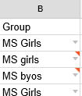

Strategy for Race Registration
Race Registrations
Cross Country Scoreboard's Racers page provides a spreadsheet like worksheet where you can manually enter registered runners. The Racers page provides a "quick entry" system -- after entering the first racer, by pressing the <enter> key, subsequent racers are incrementally assigned bib#'s (just be sure to assign an initial bib# for the first racer). Team, and group assignments are automatically copied from the row above. This minimizes the amount required to type in racers. This method works well for smaller races.
However, with larger events, gathering and entering race registration information can be a tedious task. Although there are web based registration tools where participating teams enter their team racers in a form giving you the ability to download the registrations, those tools usually require payment. Following is the strategy I use that is relatively easy, simple, and free both for you and participating team's coaches.
Use Google Spreadsheets
There is a free and simple way to do easy registrations. In Google Drive, create a shared spreadsheet in the same format at the Racers page and send the spreadsheet link to participating teams’ coaches to enter their racers. After the registration deadline, un-share the spreadsheet, assign bib numbers, and import the registrations directly into xcscoreboard. This makes it easy on you, and since most of the coaches likely already have their runners listed in a spreadsheet, it will be easy for them too.
Here is the step-by-step details on how to do this:
- Follow this link to open a “view only” copy of a sample, empty Racers Google Spreadsheet.
- Make your own copy of this sheet which will be listed in your own Google Drive.
Click File -> “Make a Copy…”
- In the “Copy document” dialog, enter the name you want to give the new spreadsheet:
- This will make a new copy of the spreadsheet located in your Google Drive’s root folder. Move it to a folder of your liking.
- In the copied spreadsheet, highlight column D (the Bib# column), open the right click menu, and select “Hide Column”. Note that you will unhide this column after all registrations have been received.
- As a sample, the spreadsheet has what is called “data validation” configured for the “Group” column of cells in order to keep registration data as accurate as possible. This limits the entries that these cells can have to only a few choices, currently set to “Varsity Boys,Varsity Girls,JV Boys,JV Girls,MS Boys,MS Girls,Jr Boys,Jr Girls”. If you’d like to change these:
- Highlight cells B2:B1501
- Click Data -> Validation
- In the Data validation dialog, verify that the “Cell Range” is “Racers!B2:B1501”
- For the Criteria, make sure “List of items” is selected and in the entry box to the right, enter a comma separated list of groups that you will run in your race, e.g.:
Varsity Male, Varsity Female.
- Click the button in the top right corner. This will open the “Share with Others” dialog.
- Click the “Advanced” text in the lower right corner which expands the dialog to “Share settings” mode.
- Under “Who has access”, select the “Change…” text. This will open up the “Link Sharing” dialog.
- Click the “On – Anyone with the link” radio button. Then click the blue “Can view” drop down menu and select “Can edit”.

- Click the “Save” button. This will take you back to the “Share settings” dialog.
- Optionally, if you already have created the Google Service Account email (see Creating a Google JSON Credendials File), enter that email address in the “Invite People” entry, unclick the “Notify People” checkbox and click “OK”, then “OK” again if the “Skip sending Invitations” dialog pops up.
- Right click on the highlighted “Link to share” address (the one beginning with https://) and click “copy” to copy that address to the clipboard. This is the link you will email your participating team coaches.
- Click “Done”.
- Craft an email or other communication to your participating teams’ coaches that gives them the link that you copied above for entering racers for registration in the spreadsheet. The coaches do not need to have google accounts to edit your spreadsheet. Make sure you give a reasonable registration deadline.
- Note, however, that anyone with the link has the ability to edit all entries in the spreadsheet – including other teams (so there is some trust involved here, but issues that this can cause are mitigated in the last step below).
- Add your own racers to the shared spreadsheet. This provides an example for others entering data to follow.
- After the deadline, open the spreadsheet and change the share settings. Click the “Share” button and in select the “Anyone with the Link can edit” drop down to select “Anyone with the Link can view”. Then click “Done”.
- In the column header just to the right of column C, click the left/right arrow button:
This will unhide the Bib# column D.
- Validate that the Groups do not have “Invalid content”. Here is an example of such with the warning orange triangle in the top right of each cell with invalid content.

The 1st cell entry is correct, but the 2nd cell entry is incorrect because the “G” in girls should be capitalized (validation is case sensitive – and so is xcscoreboard) and the 3rd cell entry is incorrectly spelled.
- Sort your racers by Team Name. This will ensure each team gets consecutive bib#'s.
- Assign race bib numbers in column D.
A quick way to do this, assuming all of your bibs are consecutive is to:
- Assign the first two racers their consecutive bibs numbers.
- Highlight those two cells.
- Hover the mouse to the bottom right square of the highlighted cells (your mouse cursor will change from a hand to a plus sign).
- Finally double click the mouse and consecutive bib numbers will fill down.
- Assuming you have shared the spreadsheet with the Google Service Account email address and you have "Set the Location of the Google Key File" in xcscoreboard … In the app, select Import -> Import Racers from Google Sheets and select the registration sheet.
- Another way to import the registered runners from the Google Spreadsheet is to (in the Google Spreadsheet app) select File -> “Download as” and either select Excel or csv. Either of these formats can be imported into xcscoreboard.
- As a courtesy, email your coaches back the link to the spreadsheet for them to validate their entries and, since they no longer have edit access, ask them to email you any corrections. This step ensures that any registrations that may have been accidentally altered (which should be unlikely) by another coach during the registration phase are corrected. If you receive any corrections (such as mis-spelled names, incorrect group assignment, missing racers), simply revise the data in the Racers page of xcscoreboard.